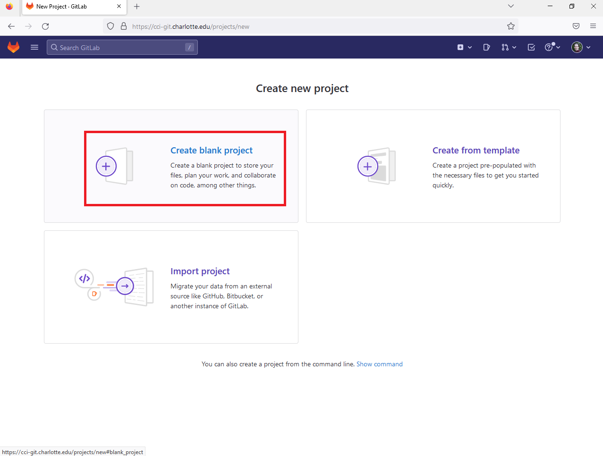
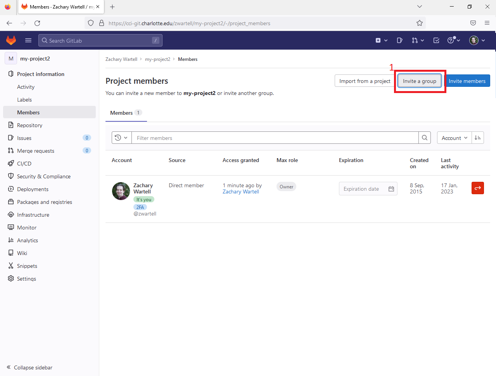
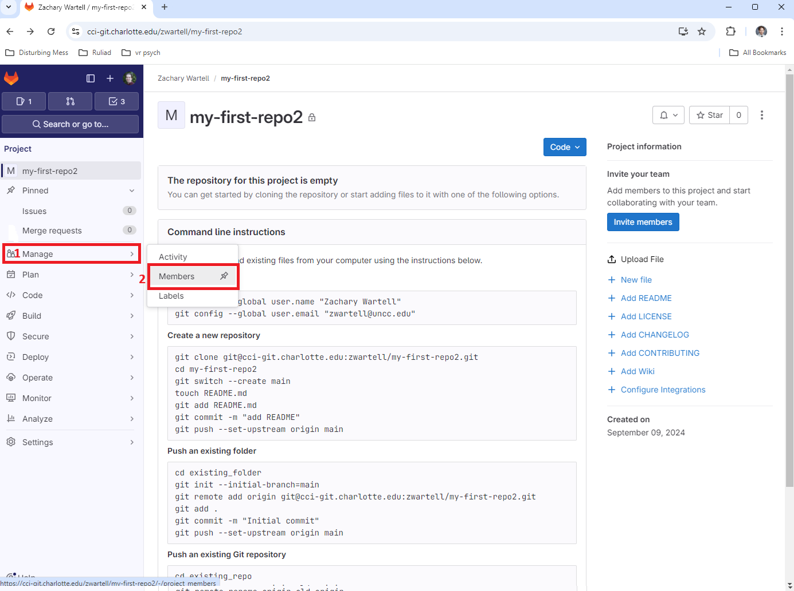
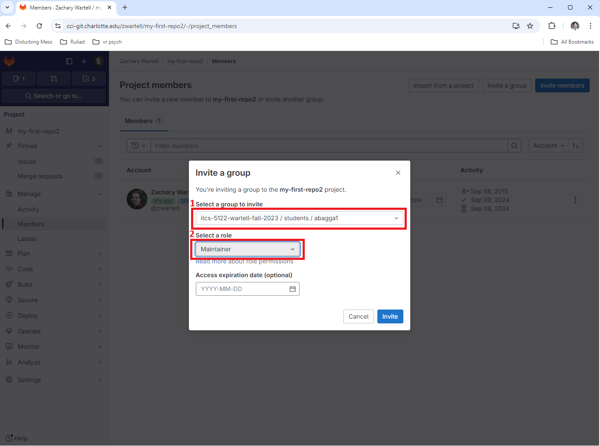
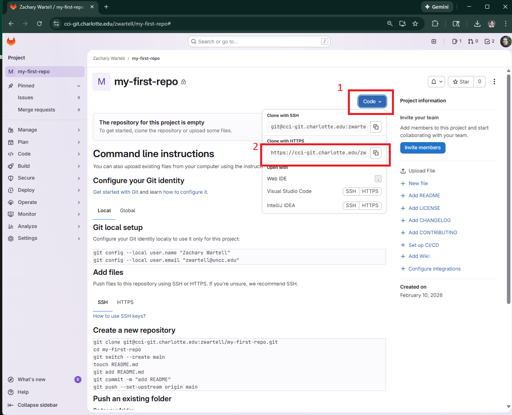

This is a gradable tutorial built around the excellent book, Pro Git by Scott Chacon (http://git-scm.com/book). The tutorial is customized for the computing environment in CCI at UNC Charlotte and targets courses taught by the author, Prof. Zachary Wartell.
Document Configuration
Parts of this document are specific to particular operating systems, and particular Git servers. In general, your instructor will tell you what git server to use for your class and will tell you what operating systems are allowable in your class.
Information for some specific courses is also given below:
[Course=ITCS 3120] In this course all student submissions are to cci-git.charlotte.edu. Regarding operating systems, any OS is acceptable as long as it supports command-line git and the Chrome browser.
Prerequisites
This assignment assumes the reader has prerequisite knowledge of several topics. Elaboration on these topics and additional resource materials are placed in sub-sections of this assignment at the points when the knowledge is first needed. Such sub-sections have headings that are prefixed with the phrase "[Pre-Req,]". For convenience, the complete list of prerequisite topics are also listed below:
Bash Command-Line Shell
Environment Variables
Guide to Reading these Instructions
(Note, the context of this section is always available by selecting the "Project" tab menu and then clicking "Help").
Generic vs Specific Instructions: Your project assignment document may have sections, sub-sections and specific numbered instructions that are specific to a particular operating system or Git server. When the instructions vary for each specific operating system, such specialized instructions are labeled using Greek letters: α,β, γ, etc. This labeling indicates the reader should perform only one of the listed instructions based on the operating system they are using.
For example, some instructions may vary for different operating systems. The notation below will be used to indicate such instructions.
Operating System:
α)
YourOS=Windows
β)
YourOS=Linux
γ)
YourOS=MacOS
Depending on the course you are taking you may be required to use only one designated operating system. This information will be given to you in class.
Screen Shot Figures: Most screen captures in this document can be zoomed to full size by clicking on the image. Click anywhere outside the zoomed image to return the image to its original size. For example, click on the image below:
Fonts:
your_user_id – this font indicates you should input a specific text string. The specifics will be indicated in the instructions.
path_to_a_directory_where_you_can_save_your_work – this font indicates you should input a specific text string. It is assumed the reader can interpret what to type based on the context and their general computer science knowledge.
[…additional output will appear…] – text in this font is a comment describing output from a command-line command.
When clarifications or adjustments are made to the assignment after its initial release, the following corrective markup will highlight the changes:
⇖1/1/2023 12:00pm: ⇖1/1/2023 12:00pm: ⇖1/1/2023 12:00pm: ⇖1/1/2023 12:00pm: ⇖1/1/2023 12:00pm: ⇖1/1/2023 12:00pm: ⇖1/1/2023 12:00pm: ⇖1/1/2023 12:00pm: ⇖1/1/2023 12:00pm: ⇖1/1/2023 12:00pm: ⇖1/1/2023 12:00pm: ⇖1/1/2023 12:00pm: ⇖1/1/2023 12:00pm: ⇖1/1/2023 12:00pm: ⇖1/1/2023 12:00pm: ⇖1/1/2023 12:00pm: ⇖1/1/2023 12:00pm: ⇖1/1/2023 12:00pm: ⇖1/1/2023 12:00pm: ⇖1/1/2023 12:00pm: ⇖1/1/2023 12:00pm: ⇖1/1/2023 12:00pm: ⇖1/1/2023 12:00pm: ⇖1/1/2023 12:00pm: ⇖1/1/2023 12:00pm: ⇖1/1/2023 12:00pm: ⇖1/1/2023 12:00pm: ⇖1/1/2023 12:00pm: ⇖1/1/2023 12:00pm: ⇖1/1/2023 12:00pm: ⇖1/1/2023 12:00pm: ⇖1/1/2023 12:00pm: ⇖1/1/2023 12:00pm: ⇖1/1/2023 12:00pm: ⇖1/1/2023 12:00pm: ⇖1/1/2023 12:00pm: ⇖1/1/2023 12:00pm: ⇖1/1/2023 12:00pm: ⇖1/1/2023 12:00pm: ⇖1/1/2023 12:00pm: ⇖1/1/2023 12:00pm: ⇖1/1/2023 12:00pm: ⇖1/1/2023 12:00pm: ⇖1/1/2023 12:00pm: ⇖1/1/2023 12:00pm: ⇖1/1/2023 12:00pm: ⇖1/1/2023 12:00pm: ⇖1/1/2023 12:00pm: ⇖1/1/2023 12:00pm: ⇖1/1/2023 12:00pm: ⇖1/1/2023 12:00pm: ⇖1/1/2023 12:00pm: ⇖1/1/2023 12:00pm: ⇖1/1/2023 12:00pm: ⇖1/1/2023 12:00pm: ⇖1/1/2023 12:00pm: ⇖1/1/2023 12:00pm: ⇖1/1/2023 12:00pm: ⇖1/1/2023 12:00pm: ⇖1/1/2023 12:00pm: ⇖1/1/2023 12:00pm: ⇖1/1/2023 12:00pm: ⇖1/1/2023 12:00pm: ⇖1/1/2023 12:00pm: ⇖1/1/2023 12:00pm: ⇖1/1/2023 12:00pm: ⇖1/1/2023 12:00pm: ⇖1/1/2023 12:00pm: ⇖1/1/2023 12:00pm: 1/1/2023 12:00pm: A popup comment on the modification appears here Elaboration on instructions - this highlighting indicates the highlighted text was inserted after original publication of the assignment. Mouse hovering on the text may display additional information about the date/time of the correction.
⇖1/1/2023 12:00pm: ⇖1/1/2023 12:00pm: ⇖1/1/2023 12:00pm: ⇖1/1/2023 12:00pm: ⇖1/1/2023 12:00pm: ⇖1/1/2023 12:00pm: ⇖1/1/2023 12:00pm: ⇖1/1/2023 12:00pm: ⇖1/1/2023 12:00pm: ⇖1/1/2023 12:00pm: ⇖1/1/2023 12:00pm: ⇖1/1/2023 12:00pm: ⇖1/1/2023 12:00pm: ⇖1/1/2023 12:00pm: ⇖1/1/2023 12:00pm: ⇖1/1/2023 12:00pm: ⇖1/1/2023 12:00pm: ⇖1/1/2023 12:00pm: ⇖1/1/2023 12:00pm: ⇖1/1/2023 12:00pm: ⇖1/1/2023 12:00pm: ⇖1/1/2023 12:00pm: ⇖1/1/2023 12:00pm: ⇖1/1/2023 12:00pm: ⇖1/1/2023 12:00pm: ⇖1/1/2023 12:00pm: ⇖1/1/2023 12:00pm: ⇖1/1/2023 12:00pm: ⇖1/1/2023 12:00pm: ⇖1/1/2023 12:00pm: ⇖1/1/2023 12:00pm: ⇖1/1/2023 12:00pm: ⇖1/1/2023 12:00pm: ⇖1/1/2023 12:00pm: ⇖1/1/2023 12:00pm: ⇖1/1/2023 12:00pm: ⇖1/1/2023 12:00pm: ⇖1/1/2023 12:00pm: ⇖1/1/2023 12:00pm: ⇖1/1/2023 12:00pm: ⇖1/1/2023 12:00pm: ⇖1/1/2023 12:00pm: ⇖1/1/2023 12:00pm: ⇖1/1/2023 12:00pm: ⇖1/1/2023 12:00pm: ⇖1/1/2023 12:00pm: ⇖1/1/2023 12:00pm: ⇖1/1/2023 12:00pm: ⇖1/1/2023 12:00pm: ⇖1/1/2023 12:00pm: ⇖1/1/2023 12:00pm: ⇖1/1/2023 12:00pm: ⇖1/1/2023 12:00pm: ⇖1/1/2023 12:00pm: ⇖1/1/2023 12:00pm: ⇖1/1/2023 12:00pm: ⇖1/1/2023 12:00pm: ⇖1/1/2023 12:00pm: ⇖1/1/2023 12:00pm: ⇖1/1/2023 12:00pm: ⇖1/1/2023 12:00pm: ⇖1/1/2023 12:00pm: ⇖1/1/2023 12:00pm: ⇖1/1/2023 12:00pm: ⇖1/1/2023 12:00pm: ⇖1/1/2023 12:00pm: ⇖1/1/2023 12:00pm: ⇖1/1/2023 12:00pm: ⇖1/1/2023 12:00pm: 1/1/2023 12:00pm: A popup comment on the modification appears here Solve this problem using depth first search - this font typeface indicates the text was deleted after original publication of the assignment and is no longer correct. Mouse hovering on the text may display additional information about the date/time of the correction.
Shell Code Examples: Shell code instructions are formatted as shown below. For lengthy code examples there is an interactive scroll bar on the right. Additionally, on the right there is a button,▽ , clicking the button will expand the box to display it's entire contests without scrolling. An example is below:
lucretius@CCIWD-435B-1 ~/ITCS_4120 $ ls -la total 20 drwxr-xr-x 1 lucretius 197609 0 Sep 23 21:57 ./ drwxr-xr-x 1 lucretius 197609 0 Sep 23 21:37 ../ -rw-r--r-- 1 lucretius 197609 0 Sep 23 21:55 'The Hitchhickers Guide to the Galaxy.azw' -rw-r--r-- 1 lucretius 197609 0 Sep 23 21:36 'On the nature of things - Lucretius.pdf' -rw-r--r-- 1 lucretius 197609 0 Sep 23 21:56 'Ethica - Spinzoa.pdf' -rw-r--r-- 1 lucretius 197609 0 Sep 23 21:57 'Moses the Egyptian: The Memory of Egypt in Western Monotheism.azw' -rw-r--r-- 1 lucretius 197609 0 Sep 23 21:37 Notes.docx […misc additional output will appear…]
This assignment is composed of 4 Parts (Part I through IV). You must complete all parts. However, some parts have several options. For any part with options, you must complete exactly one of the options. The Parts are as follows:
Part IV: Option I: Full Git Tutorial- This option is for students not familiar with using git and it's command-line-interface. This option requires a guided reading through chapters in http://git-scm.com/book and your completing a series of exercises. or
Part IV: Option II: Micro Git Tutorial- This option is for students already knowledgable about using git and it's command-line-interface. This option requires completing a smaller exercise to create and push a git repo.
Depending on the options the completed assignment is worth different number of points. For details, see the Rubric.
Part I: Installing Git Client
Git is a command-line client program that runs on your computer and communicates to the Git server.
Installation of Command-Line Git
This section walks you through installing Git client tools on your computer.
Complete only one option below depending on which operating system you are using:
This installs a minimal Unix style shell (called ‘git-bash’), the basic OpenSSH tools and git. During install select the options indicated in the sequence below:
Note, git-bash does not install the full Unix help documentation (e.g. the 'man' command). However, you can get some basic information for any command by typing the command name followed by the parameter --help. To find the complete man pages for a given Unix command, see https://www.gnu.org/manual/manual.en.html. (There are ways to install the Unix man command and man pages into git-bash, but it is generally not worth the effort for this course).
Students who are advanced Windows users can alternatively install the much more complex "Unix emulators" https://www.cygwin.com or the comprehensive https://en.wikipedia.org/wiki/Windows_Subsystem_for_Linux. However, the TA and professor cannot provide support for these other options, but if you have already installed them and are already familiar with them, you may use systems instead of git-bash.
YourOS=Linux
Typically, default Linux/Unix installations include Git. If Git is not installed, then download and install Git from http://git-scm.com/.
This tutorial and all this course's later projects, assume you have created a course directory that will contain further sub-directories, one subdirectory for each tutorial or project and that your course directory is organized in a specific manner. You should create the course directory now.
Exercise: Name the course directory using your course number, such as "ITCS_3120". In this and later assignments the bash code examples will use the name ITCS_3120 in order keep the instruction text generic. If your course number differs, you should substitute the appropriate course number after the ITCS_.
Exercise: Default refspec main vs master When you create a git repository, it is given a default name, technically called a "refspec". A refspec is a string that names or identifies the version of the repo with which you are currently working. (In 'real-world' git managed projects, it is common to have multiple named versions called "branches").
An early convention was to give a new repo the default name "master" (as in a master recording or a master key). Circa the 2020's, it is more common to instead use the default name "main". Different documentation on git will use one convention or the other. WWW git servers typically allow you to set the default to whatever you choose.
UNCC CCI's GitLab server, to which you will be submitting your course work, defaults using the name 'main'. Therefore, you should make sure that your git client is also set to use 'main' as the default. The git client can be configured as described below from bash:
Below is a guide to make sure the default setting is main.
The remainder of this tutorial and all later course tutorials and project descriptions require you have knowledge of the material listed below. Each listed topic contains recommended reading if you are not familiar with the topic.
Bash Command-Line Shell: The git instructions in this assignment and in the Pro Git book use bash, a particular command-line shell[WP2023]. You need to have a basic understanding of the Bash shell. If you are not already familiar with Bash, read the short introduction at [WART2021].
Environment Variables: Regarding environment variables, you should know what they are and how to modify them. In particular knowledge of the PATH environment variable is required. A general discussion is found at [WP2016a] and with specifics on PATH at [WP2016b]. The method to modify environment variables differs across operating system. See [Microsoft2025] for Windows or [Apple2025] for MacOS.
Part II: Install Network Communication Tools
Git servers use one of several protocols for network communication and authentication. Depending on the git server being used in your class you need to install the appropriate network communication tools.
Complete only one option below depending on which Git Server you are using:
[YourServer=softspoken-sailor.metalseed.io]
Install SSH:
Complete only one option below depending on which operating system you are using:
YourOS=Windows
- The
git-bash installation process already installed
the SSH command-line-interface tools.
YourOS=Linux
- Typically, Linux/Unix installations include the SSH command-line-interface tools. Each Linux distribution uses a different package management system. If you Linux computer does not have the SSH tools installed, you will have to consult the documentation for you Linux computer package management to install them.
YourOS=Mac
- Typically, the SSH tools we will be using should be available on the MacOS Unix shell prompt.
Verify the ssh command-line tools are installed by entering the following:
ada@turing42~/ssh --help [ssh command-line help information will be displayed]
ssh-genkey --help[ssh command-line help information will be displayed]
ls ~/.ssh [ various files should be list in this hidden SSH configuration directory]
Git servers can use one of several network communication protocols. The sections below describe how to setup your computer for the particular git server being used in your class.
Complete only one option below depending on which Git Server you are using:
[this will generate a private and public key file]
ada@turing42~/cd ~/.sshada@turing42~/.sshls -la
-rw------- 1 your_user_idyour_user_id 419 Jan 22 13:03 your_user_id-itcs-3120
-rw-r--r-- 1 your_user_idyour_user_id 104 Jan 22 13:03 your_user_id-itcs-3120.pub
[ The above two files the public and private key files you created. Additional files may also appear in the listing ]
Config File: Edit the SSH config file ~/.ssh/config. (If the file does not exist create the file. Note, the file name is "config" with no file extension). Add the following lines:
Host HostName softspoken-sailor.metalseed.io User git IdentityFile ~/.ssh/your_user_id-itcs-3120 ForwardX11 no IdentitiesOnly yes
Copy and paste the contents of the .pub into the Google Form, https://forms.gle/ajEcijs2aKbesxs48. The instructor will register your public key with the git server softspoken-sailor.metalseed.io.
Wait to receive an email from the instructor indicating that your public key is registered on the git server.
Verify Git Connectivity: After your key is registered, verify you can access the git server softspoken-sailor.metalseed.io as follows:
hello git-gitolite-server-name, this is git@server-name running gitolite3 3.6.12-1 (Debian) on git 2.43.0 R W itcs-3120/CREATOR/..* R W itcs-3120/your-user-id/itcs-3120-private-repo R welcome-public Connection to server-name closed.
Your output may differ slightly than above.
The output indicates what repo's you have access to on the server and what permissions you have for each repo R - read; W - write All repo's under the path itcs-3120/your-user-id, are private, i.e. only accessible to you and the instructor(s).
Welcome Repo: Test cloning the publicly accessible welcome repo:
ada@turing42~/ cd ITCS_3120ada@turing42~/ITCS_3120 git clone git@softspoken-sailor.metalseed.io:itcs-3120/your_user_id/welcome-public.git
Receiving objects: 100% (3/3), done.ello git-gitolite-server-name, this is git@server-name running gitolite3 3.6.12-1 (Debian) on git 2.43.0
[YourServer=cci-git.charlotte.edu]
Configurating GitLab Personal Access Token (PAT):
Exercise: Creating a Personal Access Token: You only have to create the access token once for your cci-git account. You then write down the PAT token and store it somewhere safe. The PAT is the password that you will need when you access the cci-git server from the git client. (Note, a few paragraphs below will also instruct you how to have your computer cache your PAT, so that you do not need to enter the PAT in each time you run a git command).
From a web browser, sign in to cci-git.charlotte.edu. The UNCC SSO (Single Sign On) prompt will appear asking for for your regular UNCC user id and password. UNCC SSO may also prompt your to provide UNCC dual-factor authentication.
After login into cci-git.charlotte.edu, in the upper-left corner of the cci-git.charlotte.edu page, click on the avatar icon. The page should display a dropdown menu. In that menu, select Preferences.
On the Preferences menu (left side), select Access Tokens.
In the new dialog called Personal Access Tokens, select Add New Token
In the new dialog "Add a personal access token", choose a name and optional expiry date for the token.
(Note, this welcome.git is publicly accessible and therefore clone'ing will not trigger the credential manager.)
Using the Personal Access Token:
Verifying the Personal Access Token: In order to test and verify access to the cci-git.charlotte.edu using the git CLI, you will clone the welcome-internal repo. This welcome-internal repo is internally accessible. Therefore, accessing it should trigger the Credential Manager to request you to enter your user name and PAT.
Note, some students report they can git clone the welcome-internal repo without the Credential Manager prompting for their PAT. If you this occurs to you, simply proceed to the next instructions. (The conditions under which this happens are obscure, possibly related to the combination of computer OS, whether you are on or off campus and what ISP you use).
The Credential Manager will prompt your PAT, when you start creating your own repo's.
General Procedure: The above operation using bash is generalized as follows. Assume you want clone a git repo and the repo URL is as follows:
To perform the git clone, you modify the repo URL using the PAT syntax shown below:
git clone https://Your UNCC user id>:Your_PAT@cci-git.charlotte.edu/user_or_group_name/repo_name.git
This augmented URL syntax can be avoided by installing a Git Credential Manager, described next.
Setting up a Git Credential Manager:
By default, the GitLab PAT protocol requires you to frequently enter your UNCC username and PAT token when performing git operations. To avoid this, install a Git Credential Manager. This Manager will securely store your PAT with your computer's operating system and therefore minimize how often git operations will prompt you for user id and PAT.
Installation of Git Credential Manager is described by ProGit book in the chapter linked below:
Read ProGit Git Tools - Credential Storage, stopping ⇖8/29/2024: ⇖8/29/2024: ⇖8/29/2024: ⇖8/29/2024: ⇖8/29/2024: ⇖8/29/2024: ⇖8/29/2024: ⇖8/29/2024: ⇖8/29/2024: ⇖8/29/2024: ⇖8/29/2024: ⇖8/29/2024: ⇖8/29/2024: ⇖8/29/2024: ⇖8/29/2024: ⇖8/29/2024: ⇖8/29/2024: ⇖8/29/2024: ⇖8/29/2024: ⇖8/29/2024: ⇖8/29/2024: ⇖8/29/2024: ⇖8/29/2024: ⇖8/29/2024: ⇖8/29/2024: ⇖8/29/2024: ⇖8/29/2024: ⇖8/29/2024: ⇖8/29/2024: ⇖8/29/2024: ⇖8/29/2024: ⇖8/29/2024: ⇖8/29/2024: ⇖8/29/2024: ⇖8/29/2024: ⇖8/29/2024: ⇖8/29/2024: ⇖8/29/2024: ⇖8/29/2024: ⇖8/29/2024: ⇖8/29/2024: ⇖8/29/2024: ⇖8/29/2024: ⇖8/29/2024: ⇖8/29/2024: ⇖8/29/2024: ⇖8/29/2024: ⇖8/29/2024: ⇖8/29/2024: ⇖8/29/2024: ⇖8/29/2024: ⇖8/29/2024: ⇖8/29/2024: ⇖8/29/2024: ⇖8/29/2024: ⇖8/29/2024: ⇖8/29/2024: ⇖8/29/2024: ⇖8/29/2024: ⇖8/29/2024: ⇖8/29/2024: ⇖8/29/2024: ⇖8/29/2024: ⇖8/29/2024: ⇖8/29/2024: ⇖8/29/2024: ⇖8/29/2024: ⇖8/29/2024: ⇖8/29/2024: ⇖8/29/2024: ⇖8/29/2024: ⇖8/29/2024: ⇖8/29/2024: grammar change for clarificationbefore section "Under the Hood". Based on your operating system pick the appropriate credential system as described in the above ProGit chapter.
Verify the Credential Manager To verify and test the Credential Manager, perform the following steps:
To test read-access to the server, clone the repo's below:
git will automatically retrieve your PAT from the Credential Manager and communicate it to the server.
If problems arise with the Credential Manager, you can fallback on specifying the repo URL using the PAT syntax discussed in 3.b General Procedure above.
For the instructions steps that are labeled as “Exercise: PG: Section_Name”, you need to perform the instructions described in the ProGit ("PG") book section's whose name is "Section_Name" and you need to save your work to your local file system. (Eventually you will push these files to the course's git server).
Exercise: Create a sub-directory for this tutorial called git-tutorial and cd into that directory. Do all the exercises in the ProGit book inside that directory.
Exercise: Sub-section "Initializing a Repository in an Existing Directory" assumes you have created a set of files in a directory called 'my-project'. To create and get these files, click the following link to download these files:my-project.tar.gz. After downloading, copy the file to your git-tutorial directory. Then deocompress the tar.gz file (whic is a standard file compression method) using the following commands:
ada@turing42 ~/ITCS_3120/git-tutorial tar -xf my-project.tar.gz ada@turing42 ~/ITCS_3120/git-tutorial ls -R .: my-project my-project.tar.gz
./my-project: main.c LICENSE
ada@turing42 ~/ITCS_3120/git-tutorial cd my-project
To connect your local repo to the remote repo, perform the steps below. (Below wherever you see Project_URL, substitute the full URL of the remote repo you created on cci-git).
ada@turing42 ~/ITCS_3120/git-tutorial/my-project git remote add origin Project_URL ada@turing42 ~/ITCS_3120/git-tutorial/my-project git push origin main t [ the credential manager that you install will now prompt you for your user id and PAT] Enumerating objects: 3, done. Counting objects: 100% (3/3), done. Writing objects: 100% (3/3), 211 bytes | 211.00 KiB/s, done. Total 3 (delta 0), reused 0 (delta 0), pack-reused 0 To https://cci-git.charlotte.edu/zwartell/my-project.git * [new branch] main -> main
Perform the ProGit Cloning an Existing Repository chapter’s exercises. (These exercise will create various clones of a remote repo mentioned in the book within your git-tutorial directory).
Read ProGit 2.2:
Download the required practice files, 'ProGit_Chapter_2_2.tar.gz', by click the following link: ProGit_Chapter_2_2.tar.gz. After downloading, copy the file to your git-tutorial directory. Then decompress the tar.gz file as follows:
ada@turing42 ~/ITCS_3120/git-tutorialtar -xf ProGit_Chapter_2_2.tar.gz ada@turing42 ~/ITCS_3120/git-tutorial cd ProGit_Chapter_2_2
Perform the exercises below in the above directory (ProGit_Chapter_2_2).
Exercise: Push the pre-existing local repo to a remote repo:
Create a remote repository on the git server called progit-chapter-2-2. Follow the instructions in Appendix II "How to Create New Remote Repository"
To connect your local repo to the remote repo do as shown below, substituting the full URL of the your new remote repo in place of Project_URL
ada@turing42 ~/ITCS_3120/git-tutorial/ProGit_Chapter_2_2 git remote add origin Project_URL ada@turing42 ~/ITCS_3120/git-tutorial/ProGit_Chapter_2_2git push origin main [ the credential manager that you install will now prompt you for your username and PAT]
Note: When the book discusses making changes to various files, just make any small change to each file.
Exercise: PG: Short Status - perform all steps in this ProGit chapter
Exercise: PG: Ignoring Files - perform all steps in this ProGit chapter
Exercise: PG: Viewing Your Staged and Unstaged Changes - perform all steps in this ProGit chapter Note: When the book discusses making changes to various files, just make any small change to each file.
Do the first two exercises in this ProGit chapter. You will clone simplegit-progit into:
git-tutorial\simplegit-progit
Stop at the ProGit chapter's instruction “$ git log -p -2“.
Exercise: Forking simplegit-progit Forking is a more advanced concept used to contribute to the repo containing a software project developed by someone else. Forking is used when the original developer has made the project available on a remote repo (such as GitLab or GitHub) from which you may perform git clone, but to which you do not have permission to git push. In many git fork workflows, your forked copy would reside on the same git server hosting the developer's repo.
However, in this exercise you will use an alternate fork workflow where your forked copy resides on the git server used in this course (cci-git) while the developer's repo resides on GitHub. To fork simplegit-progit do as follows:
Create a remote repository on cci-git called simplegit-progit. (Again, follow the instructions in Appendix II "How to Create New Remote Repository").
Next perform the step below:
ada@turing42 ~/ITCS_3120/git-tutorial/simplegit-progitgit remote rename origin upstream [This renames the source repo to 'upstream', a common convention] ada@turing42 ~/ITCS_3120/git-tutorial/simplegit-progitgit remote add origin Project_URL [This associates the origin ref with your remote repo] ada@turing42 ~/ITCS_3120/git-tutorial/simplegit-progitgit push origin --all [This pushes all tags to your remote repo]
Exercise: Verify that all your remote repositories now appear on the course's git server. There should be 3 repo's on the server:
This completes the Full Git Tutorial. You are done with this tutorial.
Part IV - Option II: Micro Git Tutorial
The micro tutorial is a quick verification that you have full read/write access to your remote repository on the course's Git server.
Exercise: Create a sub-directory for this tutorial called 'git-micro-tutorial' and cd into that directory. Do all the exercises in the ProGit book inside that directory.
Exercise: Shell / Git Setup The first time git is used in bash (or in another equivalent shell), youneed to perform some git configuration steps. If youinstalled bashfor the first timeon your computer, or if you are using git for the first time within another shell that you chose, then you need to perform the following:
Read ProGit 1.6. This chapter subsection and do the subsection's described exercises in the shell:
Exercise: Create and Setup Git Server Access. Create and setup your account on cci-git and setup the recommended git client access method as described in the Appendix I Git_Server_Access, Then use the bash session you just opened when applying that section’s instructions and performing the steps below.
Create a new remote repo:
[YourServer=cci-git]
Create new remote repo on cci-git called, git-micro-tutorial. using the procedures of Appendix I-3 Git_Server_Access.
Remember to share your repo with the TA and Professor (as discussed in the Appendix section Basic Git Operations).
Create local repo and link to the new remote repo:
In the instructions below, substitute the URL as listed on the server for the word Project_URL. (Appendix section Basic Git Operations. describes how to get the URL of a repo stored on cci-git).
This appendix is a reference section, the tutorial instructions have hyperlinks to various subsections in this appendix. Future class assignments also refer back to various subsections in this Appendix.
How to Create New Remote Repository
Whenever you need to create new remote repository, use the procedure below.
Pick one of the options below based on the Git Server you are using.
First, make sure you are viewing your "dashboard" on cci-git by pressing the dashboard button (selection #1). Then create a new project by making the selection #2 in the screen capture below. In screen captures below whenever you must select multiple buttons, each button press is labeled with a red box. If multiple selections are needed each box is labeled with number indicating the sequence in which you should make the selections.
Create a blank project3/14/2023: Separated step for clarifity 
Set up a new project and repo:
For selection #1, enter the appropriate name for the repo you are creating.
For selection #2 select your Git UserID
For selection #3, make sure your repo is private
For selection #4, make sure the "README.md" box is not checked. (You want a completely empty repo on the server side.)
Open the Members dialog by making the menu selections below.
Next, you will add permission for the professor and TAs to access your project. Perform the actions indicated in the following screen captures.
Select Invite Group: 2/13/2023: Updated course workflow to use private student groups. This simplifies student repo management and grading. 
Add Your Private Student Group: Each student in this course has a private group accessible only to the student (yourself) and the course grading staff (professor, TA's, graders, etc.). The group name will be similar to "itcs-3120-wartell/students/FirstNameLastName" where FirstName and LastName are your name as recorded in your GitLab profile. (If a your GitLab profile does not record a name, then your private group name will be "itcs-3120-wartell/students/uncc_user_id").
Invite your private group to your repo, using the dialog below and give that group "Reporter" access.
Invite Group - Student Private Group 9/19/2024: This step was added as a separate step. Earlier instructions attempted to avoid requiring a separate step, but the result was the student's Git UserID was no longer the Owner of the repo.
On the GitLab server, each repo has at least one Owner. The Owner can invite other GitLab users as Members to that repo. The Owner controls what access permissions a Member has. Further, GitLab allows Members to be composed into GitLab Groups. Student (Individual) Private Group: The instructor for this class has created a unique GitLab Group for each student. These groups are referred to as Student Private Group's. Each group has its visibility set to private. The course TAs are members of the group as well, allowing them to access the repository.
When you create any GitLab repository for this course, you must Group Invite your Student Private Group to you repo, so that the TA's can access your repo.
Starting with the left side menu, select Manage and then Members
Now from the Members page, select Invite Group
In Invite Group popup dialog, select your student private group and give the group the "Maintainer" role. Your student private group name will something similar toitcs-3120/students/Your-Git-UserID.
Next, you should disable the Auto DevOps feature for your project. (Otherwise gitlab is likely to generate extra error messages later on when you perform git command line operations).
Open the Settings and CI/CD.
Under Auto DevOps click Open the Expand.
Uncheck the checkbox, Default to AutoDevOps Pipeline, and click Save Changes.
Finally, you should verify that you can clone the new repository. To determine the URL make the selection below:  Then clone the repo:
~/ITCS_3120/ mkdir verify; cd verify ~/ITCS_3120/verify $ git clone URL Prefix For The Repo/my-first-repo.git Cloning into 'my-first-repo'... warning: You appear to have cloned an empty repository. Checking connectivity... done. $ ls my-first-repo
First, make sure you are viewing your "dashboard" on cci-git by pressing the dashboard button (selection #1). Then create a new project by making the selection #2 in the screen capture below. In screen captures below whenever you must select multiple buttons, each button press is labeled with a red box. If multiple selections are needed each box is labeled with number indicating the sequence in which you should make the selections.
Create a blank project3/14/2023: Separated step for clarifity
Set up a new project and repo:
For selection #1, enter the appropriate name for the repo you are creating.
For selection #2 select your Git UserID
For selection #3, make sure your repo is private
For selection #4, make sure the "README.md" box is not checked. (You want a completely empty repo on the server side.)
Open the Members dialog by making the menu selections below.
Next, you will add permission for the professor and TAs to access your project. Perform the actions indicated in the following screen captures.
Select Invite Group: 2/13/2023: Updated course workflow to use private student groups. This simplifies student repo management and grading.
Add Your Private Student Group: Each student in this course has a private group accessible only to the student (yourself) and the course grading staff (professor, TA's, graders, etc.). The group name will be similar to "itcs-3120-wartell/students/FirstNameLastName" where FirstName and LastName are your name as recorded in your GitLab profile. (If a your GitLab profile does not record a name, then your private group name will be "itcs-3120-wartell/students/uncc_user_id").
Invite your private group to your repo, using the dialog below and give that group "Reporter" access.
Invite Group - Student Private Group 9/19/2024: This step was added as a separate step. Earlier instructions attempted to avoid requiring a separate step, but the result was the student's Git UserID was no longer the Owner of the repo.
On the GitLab server, each repo has at least one Owner. The Owner can invite other GitLab users as Members to that repo. The Owner controls what access permissions a Member has. Further, GitLab allows Members to be composed into GitLab Groups. Student (Individual) Private Group: The instructor for this class has created a unique GitLab Group for each student. These groups are referred to as Student Private Group's. Each group has its visibility set to private. The course TAs are members of the group as well, allowing them to access the repository.
When you create any GitLab repository for this course, you must Group Invite your Student Private Group to you repo, so that the TA's can access your repo.
Starting with the left side menu, select Manage and then Members
Now from the Members page, select Invite Group
In Invite Group popup dialog, select your student private group and give the group the "Maintainer" role. Your student private group name will something similar toitcs-3120/students/Your-Git-UserID.
Next, you should disable the Auto DevOps feature for your project. (Otherwise gitlab is likely to generate extra error messages later on when you perform git command line operations).
Open the Settings and CI/CD.
Under Auto DevOps click Open the Expand.
Uncheck the checkbox, Default to AutoDevOps Pipeline, and click Save Changes.
Finally, you should verify that you can clone the new repository. To determine the URL make the selection below: Then clone the repo:
~/ITCS_3120/ mkdir verify; cd verify ~/ITCS_3120/verify $ git clone URL Prefix For The Repo/my-first-repo.git Cloning into 'my-first-repo'... warning: You appear to have cloned an empty repository. Checking connectivity... done. $ ls my-first-repo
[YourServer=softspoken-sailor.metalseed.io]
Gitolite Repo Creation Note: Gitolite is a light weight git server. It has no web server. All operations are via the command-line-interface. Also, all your private server git repo's are automatically shared with the instructor. (See https://gitolite.com/gitolite/user.html)
You can list the repo's that you can access as shown below. The line itcs-xyz/CREATOR/..* indicates you have permission to create new repo's under the path name itcs-3120/you-user-id
hello git-gitolite-server-name, this is git@server-name running gitolite3 3.6.12-1 (Debian) on git 2.43.0 R W itcs-3120/CREATOR/..* R W itcs-3120/your-user-id/itcs-3120-private-repo R welcome-public Connection to server-name closed.
The Gitolite server will automatically create and initialize a new repo on the server anytime you git clone a repo that does not previously exist on the server.
Therefore to create a new repo, substitute your desired new repo name for the string my-new-repo-name in the example below:
nitialized empty Git repository in /home/git/repositories/itcs-3120/your-user-id/my-new-repo-name.git/
warning: You appear to have cloned an empty repository
You have completed this appendix section. Do not proceed to the section below. Return to the document location that brought you here.
How to Push New Remote Repository
Whenever you need to push files to a new empty, server-side repository, follow the procedure below. Assume the remote is called Project_Example.git:
[YourServer=cci-git]
Option I:git clone: Use Option I, if you have not previously created files in a local directory. Perform the following:
$ git clone URL Prefix For The Repo/Project_Example.git Cloning into 'Project_Example'... warning: You appear to have cloned an empty repository. Checking connectivity... done. $ cd Project_Example [… create, add and commit files… below is just an example] $ touch README.md $ git add README.md $ git commit -m "add README" [ main (root-commit) dd8e1a0] add README 1 file changed, 0 insertions(+), 0 deletions(-) create mode 100644 README.md $ git push -u origin main $ git push -u origin main Counting objects: 3, done. Writing objects: 100% (3/3), 219 bytes | 0 bytes/s, done. Total 3 (delta 0), reused 0 (delta 0) To git@cci-git.charlotte.edu:your_user_id/Project_Example.git
Option II: git init: Use Option II, if you already have files in a local directory, and you want to make the local directory local git repo and push it to your pre-existing remote repo. Perform the following:
~/ITCS_3120/Project_Example $ ssh gitolite@hostname D unlock reponame
the above lifts safety procedures
~/ITCS_3120/Project_Example $ ssh gitolite@hostname D rm reponame
You have completed this section. Do not proceed to the section below. Return to the document location that brought you here.
Course Git Policies
This appendix is a reference section, the tutorial itself (Sections 1-6) links to various subsections in this appendix.
This appendix is designed as a reference. The tutorial sequence (found in Sections 1-6) and future class assignments refer to various subsections in this Appendix.
Submitting Class Assignments
Submit all your assignments by using Git add, commit and push to upload your code to your Git repository subdirectory.
Your projects will be graded based on the version of your code that is git push’ed to the Git server at the time of the due date for the project.
Keep the repository clean!!!
It is standard practice when using version control software to not commit intermediate or output files generated by the compiler into the repository. Intermediate or output compilation files are all regenerated when someone else checkout’s the source code and recompiles it. Like all compilers MSVS 20xxC++ compiler generates lots of these (*.ncb, *.ilk, *.exe, *.obj, etc.).
Rule:Do not commit such intermediate files to your Git repository!
Fortunately, you can automate this process using the.gitignoremechanism (see [Chacon2016]).
Reasoning:
Adding intermediate auto-generated files to the repository is wasteful, messy and can create subtle problems. Many intermediate files will create compilation problems if they are copied between different computers. Putting them in the repository is equivalent to such copying.
By convention, the following files should be put in the repository depending on your programming language and development tools.
C++ Code Rules
The following files should be put in the repository:
source code files (.cpp, .h, etc.)
compilation scripts or project files
Under MSVS 2010 for C++: .vcxproj, .sln, .vcxproj.user
Under earlier MSVS versions: .vcproj, .sln, .vcproj. . .user
CMake files
a .txt file or .doc file describing what parts of the project you completed or left incomplete, etc.
any input files such as image files or other data files required by your program
any subdirectories containing the above files
When adding subdirectories, be careful not to blindly submit their entire contents because often they contain additional automatically generated files. If you make a mistake just delete the intermediate files from the repo.
JavaScript and WebGL Code Rules
The following files should be put in the repository:
source code files:
.js,.html
compilation scripts or project files
these will depend on your IDE. Google search will usually turn up a forum discussion on which project files from a particular IDE should be commit'ed to a repo.
a .txt file or .doc file describing what parts of the project you completed or left incomplete, etc.
any input files such as image files or other data files required by your program
any subdirectories containing the above files
When adding subdirectories, be careful not to blindly submit their entire contents because often they contain additional automatically generated inetermediate files. If you make a mistake just git delete the intermediate files from the repo.
Verify Your Remote Repository
The TA only sees your remote Git server repo’s.
Rule: Always make sure your assignment appears as you expect in the remote repo (on the Git server).
The Ultimate Verification:
The ultimate way to verify the remote repo contains the files you think it does is to clone it into to another directory and check that second cloned copy for completeness. You should do this when you are completely done with your assignment.
Some Safety Checks:
Performing The Ultimate Verification frequently is tedious. During software development the following are good practices to keep track of your commit’s and push’s.
git-status
Good Result:
lucretius@CCIWD-435B-1 ~/ITCS_4120/Project_42 $ git status # On branch main nothing to commit, working directory clean
The above indicates everything is good. You have no file changes that have not been committed to the local repo and no local repo commits that have not been pushed to the remote repo.
Maybe Bad: If you get messages like:
lucretius@CCIWD-435B-1 ~/ITCS_4120/Project_42 $ git status # On branch main # Untracked files: # (use "git add ..." to include in what will be committed) # # junk_or_important.txt
then you have untracked files (but you have push’ed all your commits). This maybe ok as along as these files aren’t files that belong in a repo (such as temporary files). You might consider adding to the .gitignore file (see [Chacon2016]).
Bad: If you get a message like:
lucretius@CCIWD-435B-1 ~/ITCS_4120/Project_42 $ git status # On branch main # Your branch is ahead of 'origin/main ' by 1 commit. # (use "git push" to publish your local commits) # nothing to commit, working directory clean then
then you havenotpushed all your latest changes to the remote repo. Do agit-pushbefore the final assignment deadline.
However, Git Sync does not show you if you have changes to local files that you have not commited to the local repo!
You have completed this section. Do not proceed to the section below. Return to the document location that brought you here.